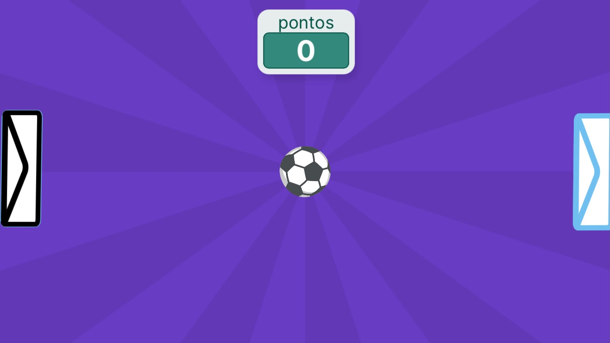

Ping Pong
Criadores: Erick Alves e Paulo André
O primeiro jogo da história? Ping Pong é inspirado em Tennis for Two, o primeiro jogo digital da história. Incline seu celular para rebater a bola e veja como um simples game criou uma industria bilionaria que cresce a cada ano.
Baixar Jogo🕮 GUIA
O jogo 'Ping Pong' é muito desafiador! O objetivo do jogo é simples: não deixe a bola encostar nas extremidades laterais da tela! O jogador movimenta a 'raquete' do lado esquerdo com os movimentos do dispositivo enquanto o bot do jogo movimenta a outra. Divirta-se!